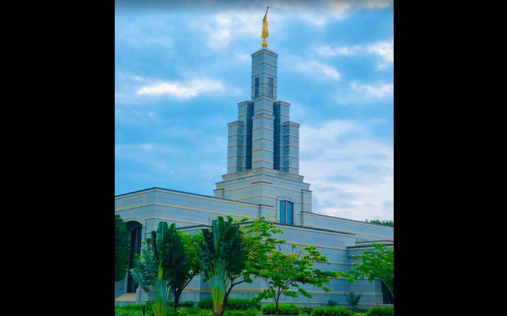

Temple Album
Home
Old
New
Large
Small
Temple Gallery
Johannesburg South Africa Temple
Durban South Africa Temple

Accra Ghana Temple
Abidjan Cote d'Ivoire Temple
London England Temple
Birmingham England Temple
Freiberg Germany Temple
Rome Italy Temple
Buenos Aires Argentina Temple